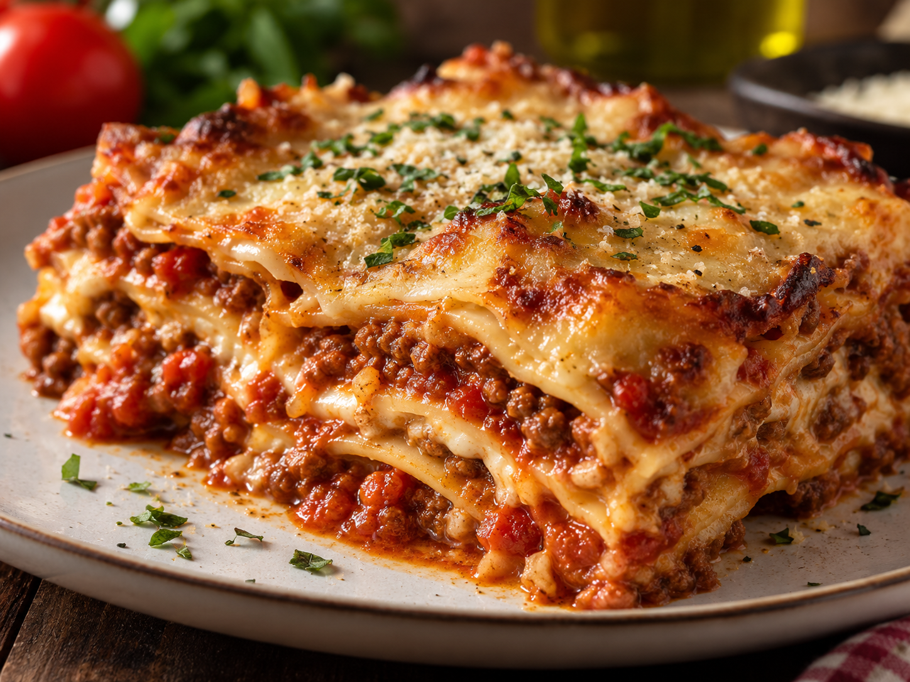

Home
Lasanha à Bolonhesa

Ingredientes
- 500 g de carne moída
- 1 cebola picada
- 2 dentes de alho picados
- 1 lata ou sachê de molho de tomate
- 500 g de massa para lasanha
- 300 g de presunto fatiado
- 300 g de queijo muçarela fatiado
- 100 g de queijo parmesão ralado
- Sal a gosto
- Pimenta-do-reino a gosto
- Orégano a gosto
- Óleo ou azeite para refogar
Modo de preparo
- Aqueça um pouco de óleo ou azeite em uma panela.
- Refogue a cebola e o alho.
- Adicione a carne moída e cozinhe até dourar.
- Acrescente o molho de tomate.
- Tempere com sal, pimenta-do-reino e orégano.
- Deixe o molho cozinhar por alguns minutos.
- Em um refratário, coloque uma camada de molho.
- Adicione uma camada de massa de lasanha.
- Acrescente presunto, muçarela e mais molho.
- Repita as camadas até terminar os ingredientes.
- Finalize com muçarela e queijo parmesão.
- Leve ao forno preaquecido a 180 °C por aproximadamente 30 minutos.
- Retire do forno e espere alguns minutos antes de servir.